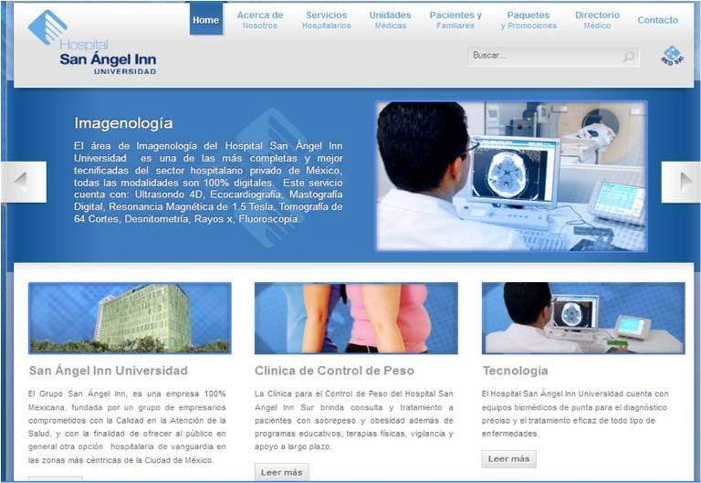
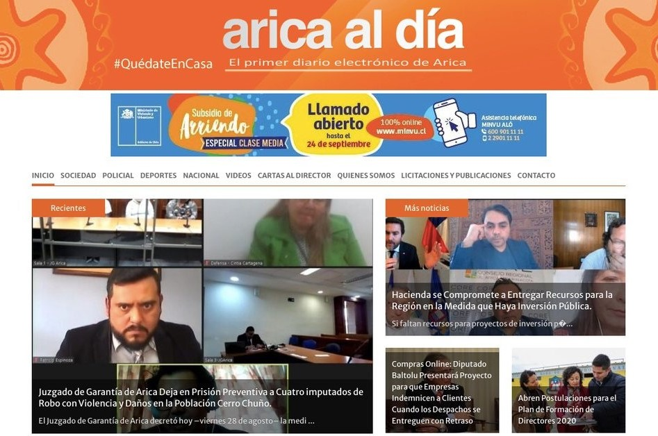

Proyecto con Hospital San ángel Inn
Vendimos el permiso de Vascus.
A la cadena Hospital San Ángel Inn se le vendió un permiso en 2014 durante un año, estos podían monitorear a sus pacientes por medio de Vascus y obtener mejores resultados.

Proyecto con el IMSS
Vendimos el permiso de Vascus app.
El IMSS nos ofreció un trato en 2016 durante 3 años, donde cualquier ciudadano de la CDMX podía descargar Vascus desde la página oficial del IMSS.

Proyecto en Chile
Vendimos el permiso de Vascus a un estado extranjero.
El estado de Arica en Chile se le vendió un permiso de Vascus en 2019 durante 2 años, donde los residentes de dicho estado podían descargarla.